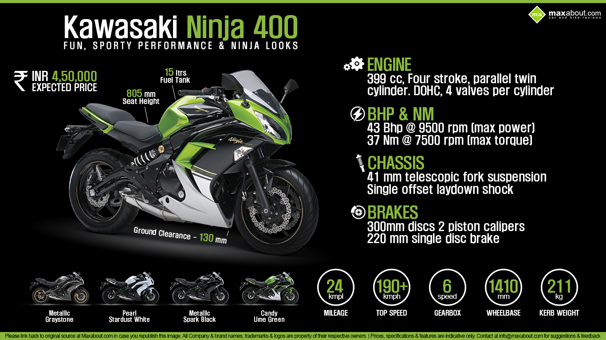
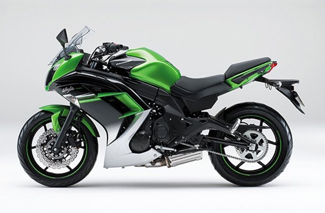
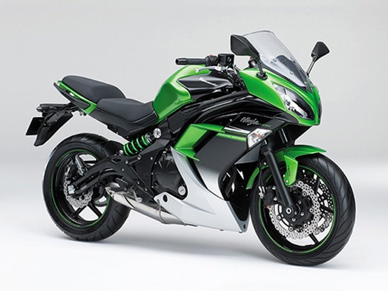

Kawasaki Ninja 400R (ER-4f) (2015 года)



Описание
- Модель: Kawasaki Ninja 400
- Год выпуска: 2015
- Тип мотоцикла: Спорт
- Мощность: 43 л.с.
- Крутящий момент: 37 Нм
- Объем бака: 15 л
- Расход топлива: 4.17 л на 100 км
Двигатель
- Двигатель: 2-цилиндровый, 4-тактный, Рядный
- Объем двигателя: 399 куб. см
- Диаметр и ход поршня: 68.4 x 54.3 мм
- Система охлаждения: Жидкостное
- Клапанов: 8
- Топливная система: 32mm x 2
- Зажигание: Электронное
Трансмиссия
- Коробка передач: 6-ступенчатая
- Сцепление: Многодисковое масляное
- Привод: Цепь
Рама и подвеска
- Рама: Диагональная из высокопрочной стали
- Ход передней подвески: 125 мм
- Ход задней подвески: 130 мм
- Угол наклона вилки: 25°
- Угол поворота левый/правый: 35°/35°
- Подвеска передняя: 41 мм телескопическая вилка
- Подвеска задняя: Одинарный амортизатор с регулировкой преднатяга пружины
- Тормоза передние: Два 300 мм лепестковых диска
- Тормоза задние: Один 220 мм лепестковый диск
- Покрышка, переднее колесо: 120/70-ZR17 (58W)
- Покрышка, заднее колесо: 160/60-ZR17 (69W)
Размеры
- Длина 2110 мм
- Ширина 770 мм
- Высота 1180 мм
- Колесная база 1405 мм
- Клиренс 130 мм
- Высота по седлу 805 мм
- Снаряженная масса 209 кг